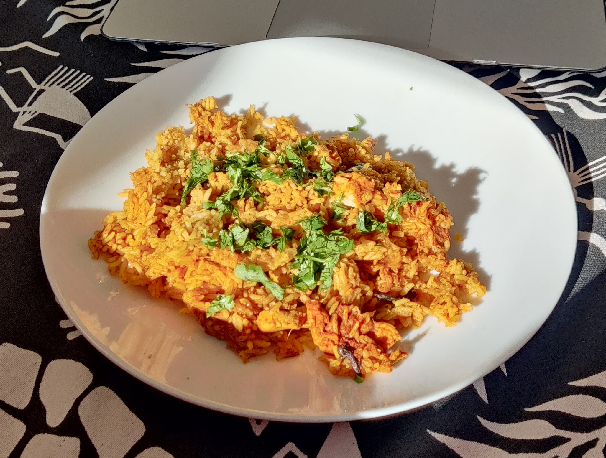

How to make Chicken Pulao
Description
Are you in for a tasty lip-smacking and spicy treat? Chicken Pulao is the best dish for all your moods, occasions and parties, plus it is much easier than making Biryani!
Making Chicken Pulao is a quick and easy process. And I promise, it doesn't even make much of a mess in your kitchen!
All you need is a few ingredients, a pressure cooker and some music! Let's begin!
Ingredients
- 1 tbsp oil
- 1 cinnamon stick
- 4 cloves
- 1-2 Bay leaves
- 4 chopped onions
- 3 tbsp ginger+garlic paste
- 4 tsp red chilli powder
- 1 tsp turmeric
- 2 tsp Pulao Masala or Garam Masala
- 1 kg chicken pieces
- Some water
- 2 cups of rice
- Salt according to preference
- Chopped cilantro leaves
Steps
- Add 1 tbsp oil into the cooker
- Add 1 cinnamon stick, 4 cloves and 1-2 Bay leaves into the oil
- Add the chopped onions and wait for them to turn brown
- Then add 1 tsp turmeric
- Add 4 tsp red chilli powder
- Add 2 tsp Pulao Masala or Garam Masala
- Add 3 tbsp ginger+garlic paste
- Mix all the ingredients together
- Then add the chicken pieces
- Mix everything well
- Add 2 cups of rice
- Add 4 cups of water
- Add salt according to your preference
- Stir everything well
- Close the pressure cooker and wait for 15 minutes. Let the whistle go off 3 times and turn the stove off.
- After the pressure has been released, open the cooker and check if everything is cooked
- Serve this in a plate and season it with chopped cilantro leaves!
